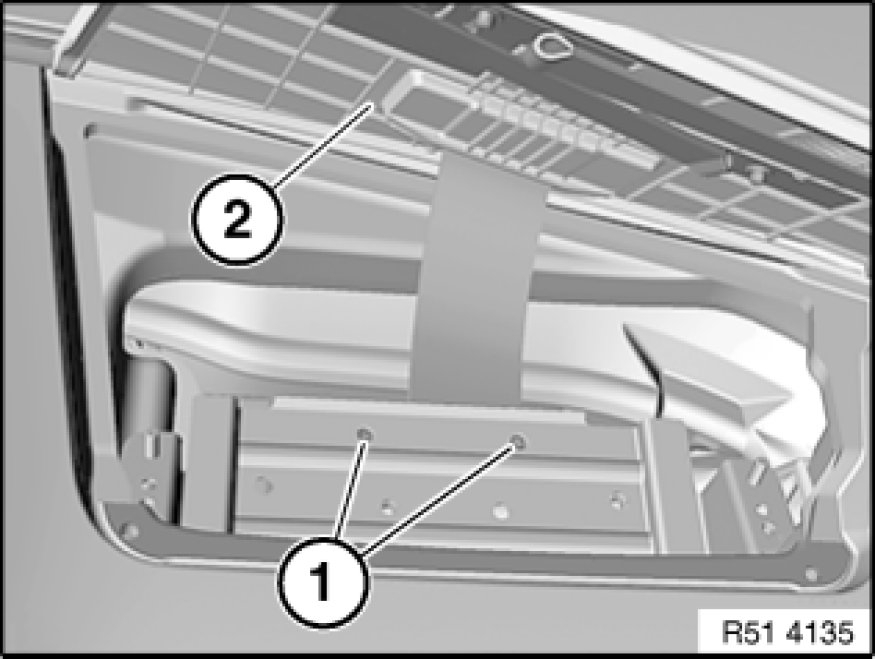

51 45 030 Removing and Installing Instrument Panel Trim
51 45 030 - Removing and installing instrument panel trim

Note:
Observe the following instructions to facilitate removal of the instrument panel trim:
- Move front seats back completely and lower
- Move steering column into "lower" and "extended" position

Necessary preliminary tasks:
- Remove both trims for front roof pillar Removing and Installing/Replacing Trim for Roof Pillar at Front (A-pillar), Left or Right
- Remove fixture for steering column stalks Removing and Installing/Replacing Fixture for Steering Column Stalk
- Remove instrument cluster Service and Repair
- Remove light operator unit Service and Repair
- Remove footwell side trim panel on A-pillar, left Removing and Installing/Replacing Side Trim Panel, Footwell, on A-pillar, Left
- In appropriate version:
- Remove storage compartment in instrument panel 51 45 ... - Removing and installing storage tray in instrument panel
- Remove Central Information Display Service and Repair
- Remove radio receiver
- Remove finisher for preselector lever 51 16 210 Removing and Installing/Replacing Trim For Preselector Lever
- Remove storage compartment 51 16 200 Removing and Installing Storage Compartment
- Remove right glovebox with housing 51 16 366 Removing and Installing Right Glovebox With Housing
- Remove front right cup holder 51 16 194 - Removing and installing/replacing front side left or right cup holder
- Remove footwell side trim panel from right A-pillar Removing and Installing/Replacing Side Trim Panel, Footwell, on A-Pillar, Right
- Remove trim for instrument panel, bottom left 51 45 181 Removing and Installing/Replacing Bottom Right Trim For Instrument Panel
- Remove airbag module on front passenger side Removing and Installing/Replacing Airbag Module on Passenger Side
Open locks (1) and pull down fuse carrier (2).

Open cover for passenger airbag (2).
Note:
The mounting plate may fall into the passenger footwell when screws (1) are released.
Release screws (1), tightening torque 72 12 10AZ Airbag Modules.
Remove complete passenger airbag cover (2) with associated mounting plate.
Installation:
Make sure mounting plate (1) is correctly seated in retaining strap (2) of passenger airbag cover.
Release mucket (1) in area of instrument panel trim (5).
Release screws (2).
Unscrew nuts (3).
Disconnect plug connection for solar sensor (6).
Pull back trim for instrument panel (5) and remove.
Installation:
Make sure foam insulation (4) is correctly seated before fitting instrument panel trim (5).
Installation:
Make sure guides (1) and (2) of instrument panel trim (3) are correctly seated in associated mountings.
Make sure seals are correctly seated on air ducts.